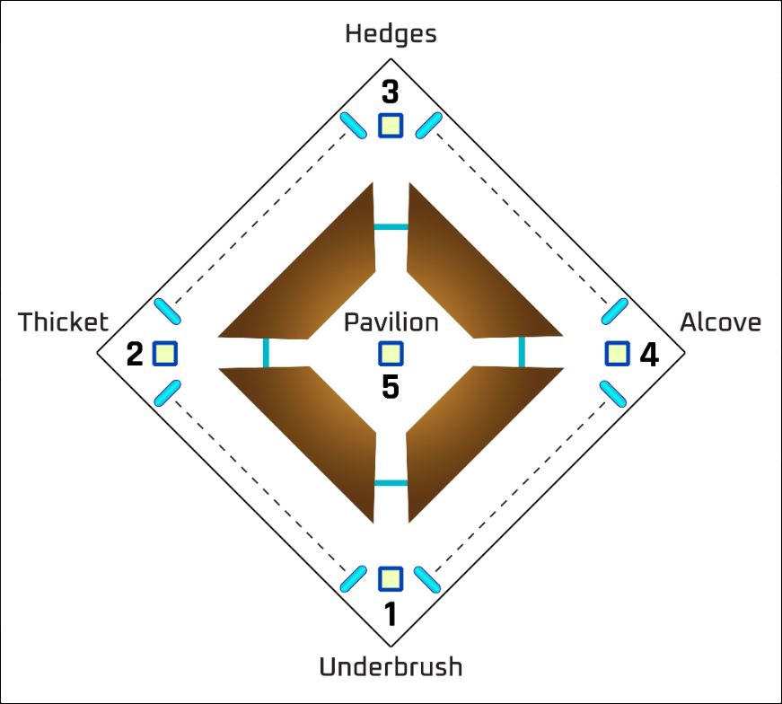

Garden of Salvation
Things You Should Know
-To do this raid, you will need to own the Shadowkeep expansion.
-The recommended light level is 1350, so any weapons and armor you bring will work.
-Vex are the only enemies you will face.
-For doing damage to the bosses, linear fusion rifles will be most effective.
Launching Into the Raid
The node for the raid is located on the moon in the top-left.
Vex Gate
When you spawn, you will see a giant vex portal. Once you approach the portal, it will light up and Vex will begin coming through. Kill all the vex and the portal will activate, allowing you to enter.

First Encounter
The first encounter is up ahead. You know your're in the right place when you see the first boss (The Concentrated Mind) devouring a minotaur.

Before You Start
-There aren't any damage phases in this encounter, so any loud-out will work.
-You will need to split into 2 teams of 3. Both teams will be doing both jobs at some point.
Starting
To start the encounter, shoot the cube located behind and to the right of the boss. This will open the cube, now anyone who gets too close to it will get tethered. When someone is tethered to the cube, another player can walk up to them and they will get tethered to the first player. With this you can create a chain of guardians to connect the cube to a conflux. Create a chain that connects the first cube to the door on the right side of the room to open the door to the second room and start the encounter.


Team One - First Room
Team one's job is to stay in the first room and pick up the "Voltaic Overflow" that the boss spits out. Every once in a while, the boss will stop shooting at you, move somewhere in the room, and spit out this voltaic overflow. If this is not picked up within a very short amount of time, you will wipe. When you pick this up, you will get a debuff called "Voltaic Overflow" that lasts for 2 minutes and 30 seconds. If you pick up a second voltaic overflow with this debuff, you will instantly die.

Team Two - Second Room
While the first team is picking up the voltaic overflows. Team Two will proceed into the second room. Here, their job is to locate the next cube and kill all the enemies. You'll notice the cube is protected by an indestructible box. Once every ad has been killed, a hydra will spawn called an "Angelic." Killing this hydra will remove the box, allowing you to connect the cube to the next door. You'll need to do this quickly so Team One doesn't run out of people to pick up the debuff.

Next Room
Once the door has been opened, the 2 teams will switch jobs. Team two will stay in the second room and team one will leapfrog into the third room. Now team one needs to find the cube and kill the angelic, while team two is picking up the debuff. Once the next door is open, Team two will leapfrog into the fourth room.
The Fourth Room
The fourth room is slightly different, instead of 1 box and 1 conflux there are 3 of each. You will have to connect all three boxes to its corresponding conflux. Besides that, everything is the same. Until you get to the next room.
Final Room - The Field
Once Team two connects the first cube to the door, the Boss will leave. Team one should then join team two in the fourth room. Once all three cubes have been connected to the door, it will open into a massive field with several cyclops' and overload minotaurs. Anyone who does not have the "Voltaic Overflow" debuff should rush down the field because the boss will start dropping more. He will drop a total of 3 debuffs along the field. Once you pick up all of them, the encounter is over.
Second Encounter
After a short jumping puzzle, you will reach the next encounter. First, designate two people as "runners" and the other four should number themselves as defenders 1-4. This will determine which corner of the map they will be defending. Runner 1 will be responsible for 1 and 2, runner 2 will be responsible for 3 and 4.
Mechanics
In front of you will be three goblins worshiping a pillar. Atop this pillar will be another conflux. There will be one of these pillars in each corner of the map. Towards the center at each pillar, you will see another cube. When you connect a cube to a pillar, anyone who was apart of the chain will be granted the "enlightened" buff. This buff is the only way to destroy the white shields enemies will have. The goal is to kill all of the enemies before they reach the pillar and sacrifice themselves.

Starting
Kill the three goblins around the 1st pillar, then towards the center an Angelic will spawn. Kill this and create a chain with all
6 player to the first pillar. Then, everyone besides defender 1 will run to the left, kill everything around the pillar, and make another
chain to pillar 2 to refresh the "Enlightened" buff. Defender 2 will stay here and runner 1 will begin his job by taking the
portal back to pillar 1. Defender 1 and runner 1 will make another chain to refresh the buff. Now runner 1 will continue going
back and forth helping defenders 1 and 2 refresh their buff.
While this is happening, the remaining players should continue running down to the third and fourth pillars leaving each defender
at their predetermined pillar. Runner 2 will help defenders 3 and 4 keep their buffs refreshed.
Its important to note that the portals will not open until both pillars on either side have been chained to at least once.
After a while of defending, one of the 4 sides will have 3 Angelics spawn on them. The defenders should call this out to their runners
so they can come help kill them quickly. The Angelics will spawn on all four sides before the center opens.
Center
A bit after all 4 rounds of Angelics have been defeated, the center will open up revealing a 5th pillar. Everyone should rush to the center to help defend it. There will be another cube you can use to refresh the buff. After defeating three waves of enemies including several Angelics, The Encounter is over.
Final Encounter
The final encounter takes place in the same location as the second. This is where you will kill the Concentrated Mind that you have been chasing. So equip your best linear fusion rifles and decide what buffs/debuffs you'll be using.For this encounter, you will split into 2 teams of 3: Team Gambit and Team Eyes.
Team Gambit
First, number off your team members #1, #2, and #3. Team Gambit's job is to kill the large minotaur that will spawn in one of the 4 larger hallways that lead back to the four pillars. When killed, they will drop 5 motes each. Have #1 on team gambit take these and head to which ever one of the 4 pillars from the last encounter has a tall white pillar of light on it. Here, they will deposit their motes, granting them the "enlightened" buff, and defend the pillar. Meanwhile, #2 and #3 should be killing more minotaurs and #2 should be pciking them up until they have 10. Once they have 10, head to the pillar #1 is defending to take his place. #3 will now start picking up motes until they have 10. Finally, #1 will pick up 5 more motes and run to the pillar to deposit. Once 30 total motes have been deposited, the boss will approach the pillar and begin damage phase.
Team Eyes
Periodically throughout the fight, the boss will move toward one of the smaller hallways. Here he will drop another "voltaic overflow"
similar to the first encounter. All three members of team eyes need to follow him down that hallway. Once there, one person will call
out that they're picking up the debuff, and the other 2 need to be on their left and right. Unlike the first encounter, when you pick
up this debuff it will detain you and the boss will open its face revealing 6 of his eyes. There are 3 inner eyes and 3 outer.
Whoever took the debuff will be the only player able to see the correct eyes to shoot. The detained player will either see the outer
eyes glowing red, or the inner eyes glowing red. Call it out as soon as you see it. The people on the left and right will see all 6 eyes
glowing, so they need the callout from the detained player. The detained player will shoot the eye at the top, left and right shoot the
left and right eyes respectively.
After shooting the eyes successfully, the boss will return to the center. After a while he will go back to another hallway. Just
rinse and repeat until Team Gambit tells you they've deposited all the motes. When this happens All 6 players should meet at
whatever pillar Team Gambit has been defending and get ready for damage.
Damaging the Boss
Once the boss starts moving towards the pillar, everyone should try to get there as fast as possible. The boss will approach the pillar and open his face, revealing A LOT of eyes. Your team will need to shoot and destroy all of these eyes. Once they're all destroyed, his center eye will turn white. This means he is vulnerable, unload as much damage as possible. When his center eye turns white, he will begin moving back towards the center. You'll need to chase him down pretty fast so you don't get stuck behind walls that he'll put up. Rinse and repeat until he is dead.